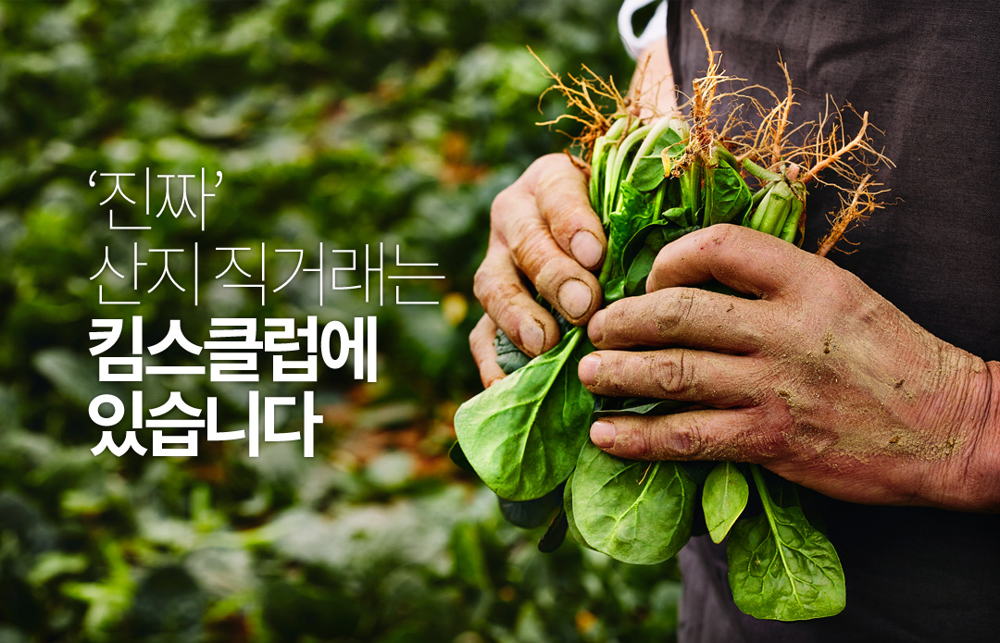
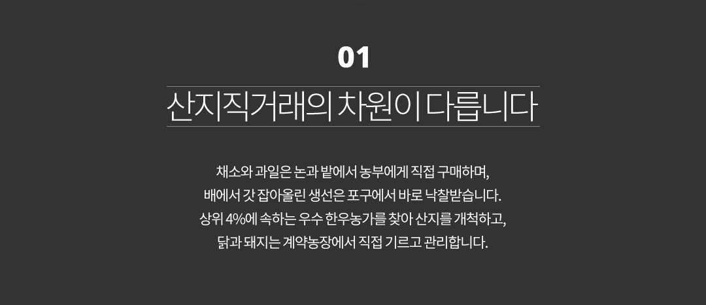
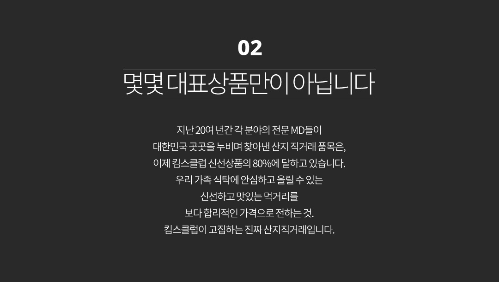
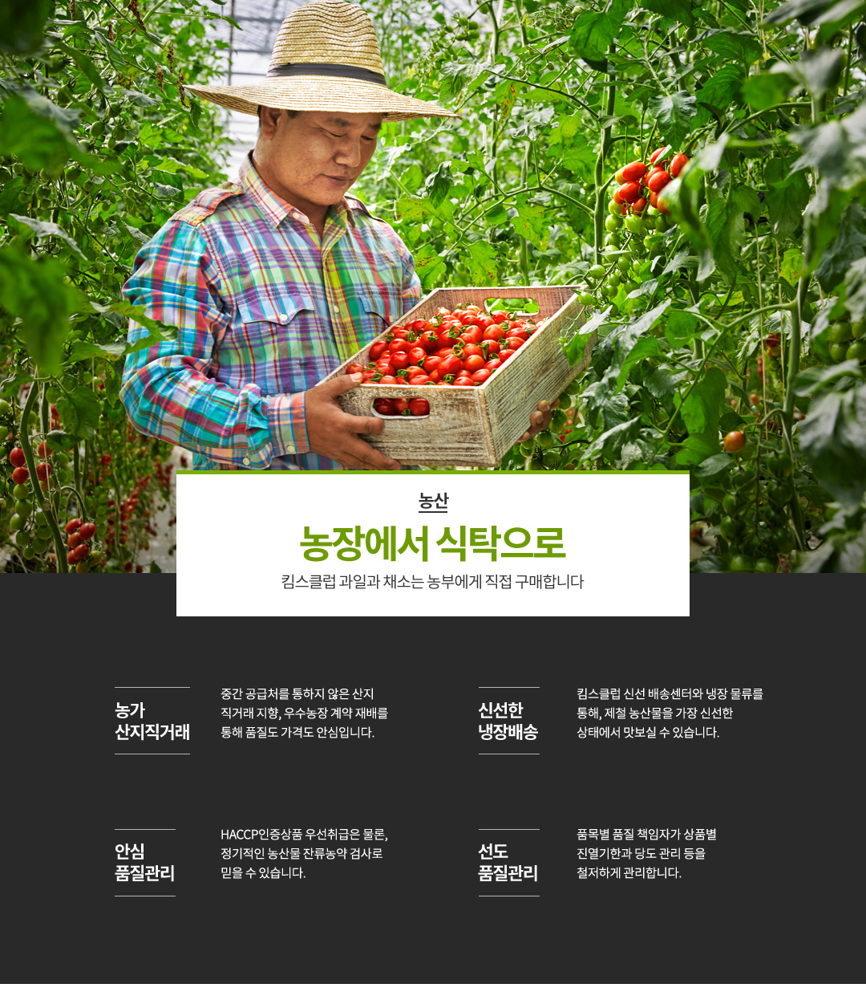
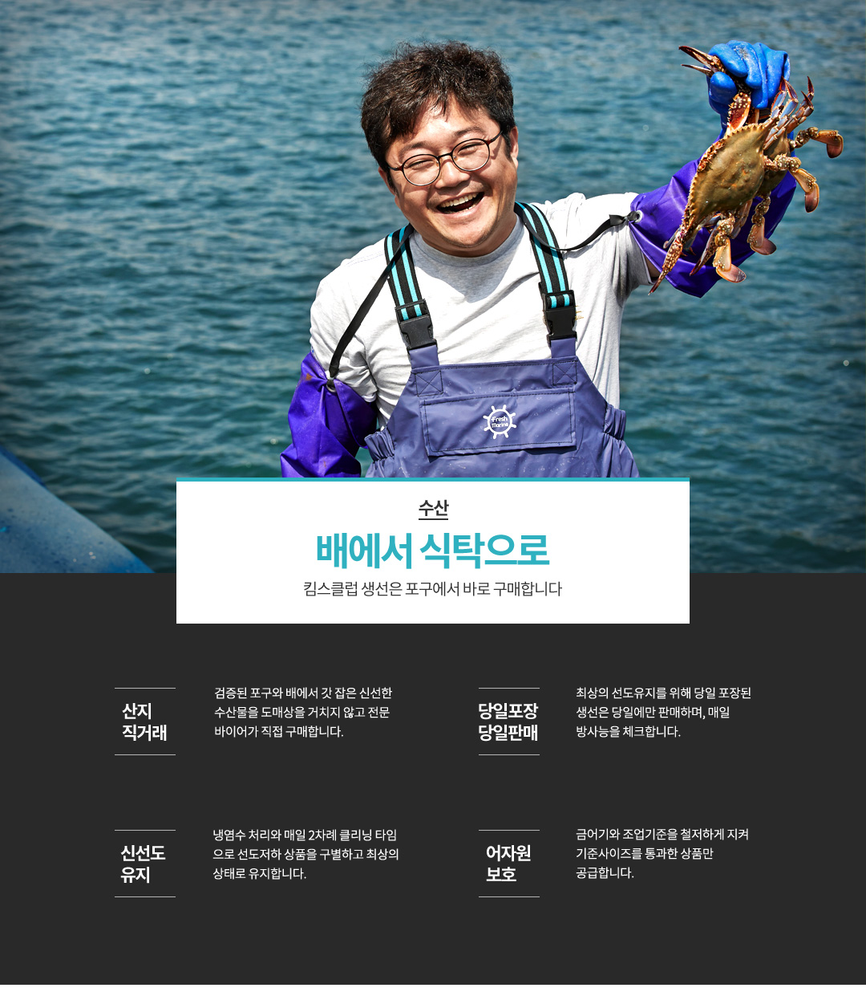
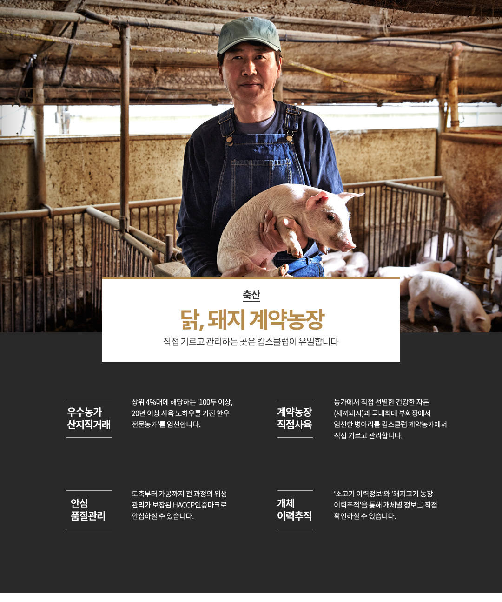
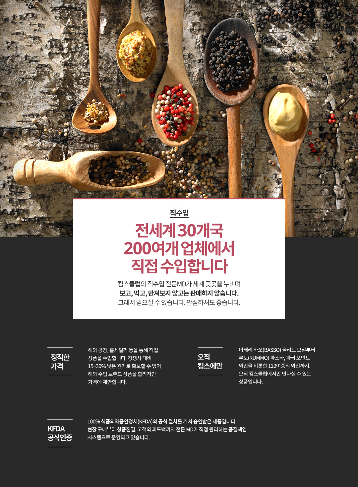

- HOME
- 킴스클럽소개







진짜 산지 직거래는 킴스클럽에 있습니다
- 01 산지직거래의 차원이 다릅니다.
채소와 과일은 논과 밭에서 농부에게 직접 구매하며, 배에서 갓 잡아올린 생선은 포구에서 바로 낙찰받습니다. 상위 4%에 속하는 우수 한우농가를 찾아 산지를 개척하고, 닭과 돼지는 계약농장에서 직접 기르고 관리합니다. - 02 몇몇 대표상품만이 아닙니다.
지난 20여 년간 각 분야의 전문 MD들이 대한민국 곳곳을 누비며 찾아낸 산지 직거래 품목은, 이제 킴스클럽 신선상품의 80%에 달하고 있습니다. 우리 가족 식탁에 안심하고 올릴 수 있는 신선하고 맛있는 먹거리를 보다 합리적인 가격으로 전하는 것. 킴스클럽이 고집하는 진짜 산지직거래입니다.
- 농산
- 농장에서 식탁으로 킴스클럽 과일과 채소는 농부에게 직접 구매합니다.
- 농가 산지직거래 - 중간 공급처를 통하지 않은 산지 직거래 지향, 우수농장 계약 재배를 통해 품질도 가격도 안심입니다.
- 안심 품질관리 - HACCP인증상품 우선취급은 물론, 정기적인 농산물 잔류농약 검사로 믿을 수 있습니다.
- 신선한 냉장배송 - 킴스클럽 신선 배송센터와 냉장 물류를 통해, 제철 농산물을 가장 신선한 상태에서 맛보실 수 있습니다.
- 선도 품질관리 - 품목별 품질 책임자가 상품별 진열기한과 당도 관리 등을 철저하게 관리합니다.
- 수산
- 배에서 식탁으로 킴스클럽 생선은 포구에서 바로 구매합니다
- 산지 직거래 - 검증된 포구와 배에서 갓 잡은 신선한 수산물을 도매상을 거치지 않고 전문 바이어가 직접 구매합니다.
- 신선도 유지 - 냉염수 처리와 매일 2차례 클리닝 타임 으로 선도저하 상품을 구별하고 최상의 상태로 유지합니다.
- 당일포장 - 최상의 선도유지를 위해 당일 포장된 생선은 당일에만 판매하며, 매일 방사능을 체크합니다.
- 어자원 보호 - 금어기와 조업기준을 철저하게 지켜 기준사이즈를 통과한 상품만 공급합니다.
- 축산
- 닭, 돼지 계약농장 직접 기르고 관리하는 곳은 킴스클럽이 유일합니다
- 우수농가 산지직거래 - 상위 4%대에 해당하는 ‘100두 이상, 20년 이상 사육 노하우를 가진 한우 전문농가’를 엄선합니다.
- 안심 품질관리 - 도축부터 가공까지 전 과정의 위생 관리가 보장된 HACCP인증마크로 안심하실 수 있습니다.
- 계약농장 직접사육 - 농가에서 직접 선별한 건강한 자돈 (새끼돼지)과 국내최대 부화장에서 엄선한 병아리를 킴스클럽 계약농가에서 직접 기르고 관리합니다.
- 개체 이력추적 - ‘소고기 이력정보’와 ‘돼지고기 농장 이력추적’을 통해 개체별 정보를 직접 확인하실 수 있습니다.
- 직수입
- 전세계 30개국 200여개 업체에서 직접 수입합니다
- 킴스클럽의 직수입 전문MD가 세계 곳곳을 누비며 보고, 먹고, 만져보지 않고는 판매하지 않습니다. 그래서 믿으실 수 있습니다. 안심하셔도 좋습니다.
- 정직한 가격 - 해외 공장, 홀세일러 등을 통해 직접 상품을 수입합니다. 경쟁사 대비15~30% 낮은 원가로 확보할 수 있어 해외 수입 브랜드 상품을 합리적인 가격에 제안합니다.
- KFDA 공식인증 - 100% 식품의약품안정처(KFDA)의 공식 절차를 거쳐 승인받은 제품입니다. 현장 구매부터 상품진열, 고객의 피드백까지 전문 MD가 직접 관리하는 품질책임 시스템으로 운영되고 있습니다.
- 오직 킴스에만 - 이태리 바쏘(Basso) 올리브 오일부터 루모(Rummo) 파스타, 파커 포인트 와인을 비롯한 120여종의 와인까지. 오직 킴스클럽에서만 만나실 수 있는 상품입니다.